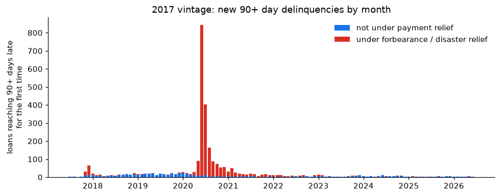
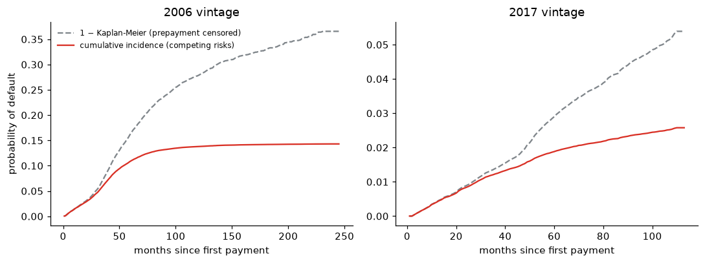
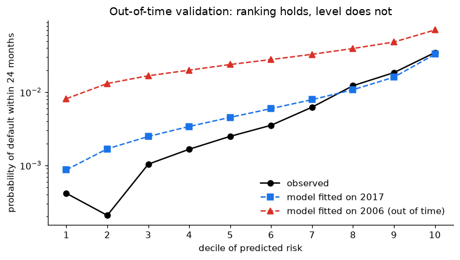
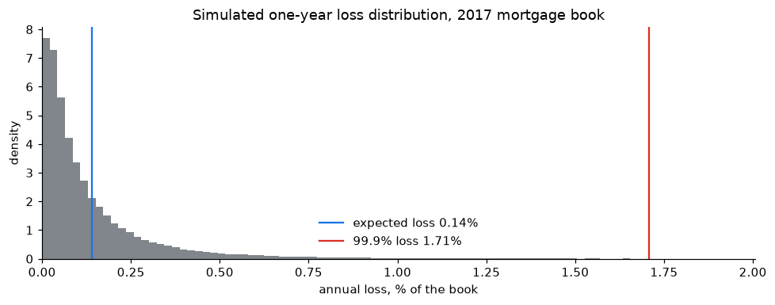

Why did 2006 mortgages default almost six times more than 2017 ones?
Credit-risk modelling on 100,000 US mortgages: competing-risks survival, an out-of-time validated Cox model, borrower segmentation and a Monte Carlo of portfolio losses checked against the Basel formula
November 2026 · Python (pandas, lifelines, scikit-learn, SciPy) and SQL (DuckDB) · Code and notebooks · Data: Freddie Mac Single-Family Loan-Level Dataset
The question
Mortgages originated in 2006, just before the US housing crash, defaulted almost six times more than mortgages originated in 2017. Were 2006 borrowers simply riskier, or did ordinary borrowers meet an extraordinary economy? The answer decides how a bank should build and recalibrate its credit models.
Two random samples of 50,000 loans each come from Freddie Mac’s public loan-level data. Every loan is followed month by month until it is repaid, defaults, or the data end.
The answer: mostly the economy
Giving the 2006 book the safer 2017 mix of borrowers barely lowers its default rate (10.9% → 9.7% within 60 months). A Cox model that adjusts for credit score, leverage, debt-to-income, pricing and loan purpose reaches the same conclusion by a different route: an otherwise identical 2006 loan had 4.6 times the default hazard.

Two traps that would have produced the wrong answer
In 2020, “90 days late” did not mean default. The standard 90-days-past-due definition, applied blindly, more than doubles the 2017 default rate (5.9% instead of 2.5%), because borrowers in COVID-19 forbearance were reported as delinquent. Only 30% of the loans whose first serious delinquency happened under forbearance ever defaulted.

Treating prepayment as censoring nearly doubles the default probability. Most mortgages leave the book by prepayment, and a refinanced loan cannot default. The usual 1 − Kaplan-Meier estimate puts the 100-month default probability of the 2006 vintage at 25.5%; the competing-risks (Aalen-Johansen) estimate is 13.5%.

Validating the model
- Out of time: a Cox model fitted on the 2006 vintage ranks 2017 borrowers almost as well as a model fitted on 2017 itself (concordance 0.778 vs 0.790) but overstates their probability of default several times over. Discrimination transfers across the cycle; calibration does not.
- Residual diagnostics: scaled Schoenfeld residuals show that origination information ages (the credit-score effect loses about two thirds of its size over the life of a loan); martingale residuals show the credit score acts non-linearly; Cox-Snell residuals show the model overstates the accumulated risk of its riskiest loans, consistent with a vintage effect that changes over time.

Portfolio losses and capital
A one-factor (Vasicek) model of correlated defaults, calibrated on the 2017 book with a crisis-level loss given default:
- Monte Carlo and the closed-form Basel formula give the same 99.9% loss (1.71% vs 1.75% of the book).
- Importance sampling estimates the 1-in-1,000 tail with about 290 times less variance than plain Monte Carlo.
- MCMC (Metropolis–Hastings, written from scratch) gives the posterior of the default correlation: median 0.04, 95% credible interval 0.02–0.07, four chains with R-hat = 1.000.
- The worst crisis year of the 2006 vintage (2010, 4.4% of loans defaulting) corresponds, with the Basel correlation of 0.15, to roughly a once-in-200-years economy; the 99.9% level would have covered it.

The notebooks
| Notebook | What it does | |
|---|---|---|
| 1 | Data and the definition of default | SQL pipeline, outcomes, the forbearance trap, loss given default |
| 2 | Survival with competing risks | Aalen-Johansen vs Kaplan-Meier, default and prepayment curves, default by credit score |
| 3 | Cox model | Hazard ratios, proportional-hazards test, residual diagnostics, effects by loan age, out-of-time validation |
| 4 | Segmentation | PCA, k-means, composition vs environment |
| 5 | Portfolio loss simulation | Vasicek Monte Carlo, Basel check, importance sampling, crisis tail probability, correlation by maximum likelihood and by MCMC |
Data
The data are not included in the repository: Freddie Mac’s terms allow publishing research results but not the dataset or extracts of it. Everything shown is aggregated; no individual loan appears. Instructions to reproduce are in the README. Freddie Mac provides the dataset “as is” and does not endorse this analysis.
Skills shown: survival analysis with competing risks · Cox proportional hazards and residual diagnostics · out-of-time model validation · PCA and clustering · Monte Carlo simulation, importance sampling and MCMC · Vasicek / Basel IRB capital · maximum likelihood · SQL (DuckDB) · Python
Code: MIT License. Aaron Mauricio Gómez Jiménez · LinkedIn · ORCID